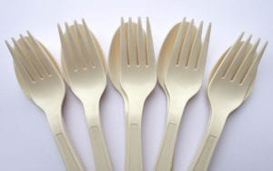
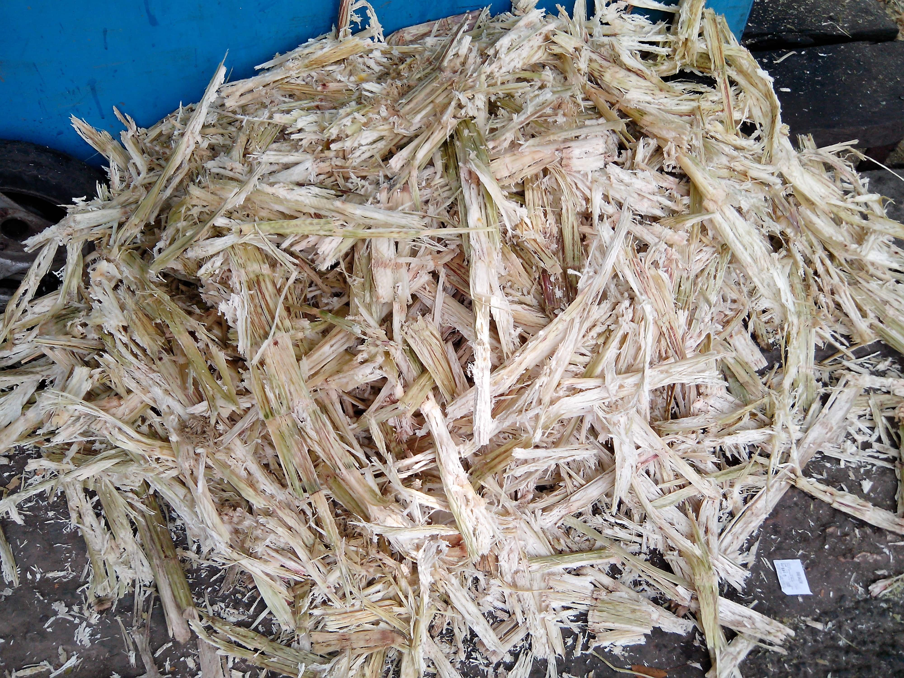

Hanf:
- Hanf hat Gesundheitliche Vorteile da es eine ökologisch nachhaltige Alternative ist
- Es kann als Rohstoff für Lebensmittel, Textilien und Medikamente usw. verwendet werden
- Hanf wächst schneller als die meisten Baumarten und benötigt weniger Pestizide als Baumwolle oder Flachs
- Die Fasern von Hanf werden seit langen für die Herstellung von Surfbrettern verwendet
- BMW, Mercedes und Bugatti setzen bereits Hanfkunststoffe bei ihren Autos für spezielle Bereiche im Innenraum zur Isolierung der Türverkleidung ein.
- Im 718 Cayman GT4 ist der Heckflügel aus Hanffaserplatten gebaut.

PLA-Polylactid:
- Wird auch Polymilchsäure genannt und besteht aus Maisstärke und Milchsäuren
- Es ist Biologisch abbaubar und kann für die Herstellung von Plastiktüten, Trinkbechern, Einweg- Besteck und Strohalmen, Folien benutzt werden

Bagasse:
- Bagasse wird aus einem Nebenprodukt der Zuckerproduktion gewonnen.
- Nach Auspressen des Saftes aus dem Zuckerrohr bleiben faserige Reste zurück, welche sich optimal zur Weiterverarbeitung von Einweggeschirr und Verpackungen eignen.
- Bagasse ist ein rein biobasiertes Material, vollständig kompostierbar, wasserundurchlässig, fettresistent und enorm hitzebeständig
- Bagasse-Produkte eignen sich durchaus auch zum Aufwärmen in Mikrowelle und Ofen.